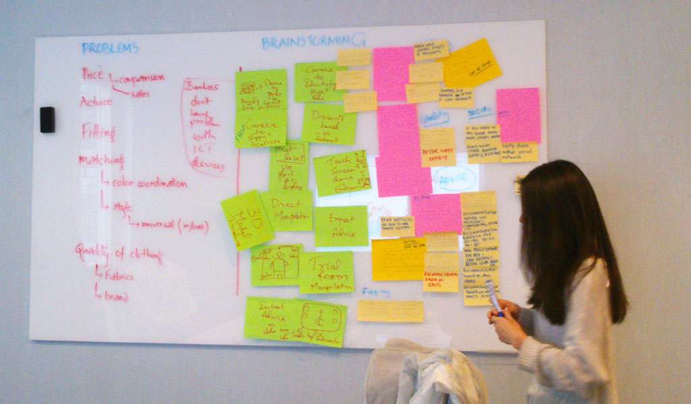

Process
3 interviews + 3 testing on paper prototype + 4 testing on digital prototypes
1. Observation and Interview .
In this project, the topic for our group was “banker and fashion”. To better understand this topic we went to some bank near Kista Galleria(e.g. SEB and Nordic bank) to do some observations, and we found out that: 1) in some bank the staff were relatively younger and have a casual dress code; 2) in other banks where the staff were mostly elder, they were dressed more formal with suits and shirts.
Therefore we decided to targeted at the younger staff because they tend to have more choice of cloth, thus providing us more design opportunities. Then we did 3 interviews with the younger staff in the bank during their free time. And we found out that: 1)Most bank in Stockholm didn’t have a very strict dressing rules; 2) Bankers wanted to have some hint of their own style while obeying the companies’ dressing rule; 3) Bankers didn’t spent much time choosing their clothes in the morning, but they usually didn’t have too much time browsing in the big shopping mall looking for the right cloth to match.
2. Data analysis
Based on the observation and interview, and combining technology and other perspective, we started brainstorming and affinity diagramming. In the process when bankers tried to find the right cloth at work, several problems were identified:
Brainstorming and affinity diagraming
1. Price range and the cloth outlook didn’t match.
2. General advices was needed
3. The cloth looked different by just seeing it or fit it on
4. Matching cloth according to cloth color, skin color, or cloth style was hard.
5. The quality of the cloth was hard to tell
To meet their needs, two ideas came out as firstly a large screen installation of fashion guides in the big shopping; secondly a system connecting the clothing factory and the decision makers of the bank.
3. Building paper prototype and testing
Our team was then divided into groups of two to develop two paper prototypes and testings were carried out accordingly. Me, Gigi and Arindra were in a team to build the large screen fashion guides. The paper prototype was built to illustrate the basic concept and its main functionalities. Two testings using the cardboard prototype was conducted and several insights were got:
1. The brand of the cloth was important for the users
2. Besides skin color, hair color was also important
3. And the user wanted to see the 360 degree fitting effect
Also some minor usability problems were identified, while this was largely due to the limitation of the prototype, these findings also help us avoid some possible mistakes and pay attention to the details.
Building paper prototypes
4. Building digital prototype and testing
4.1 Building interactive prototype
Then we were asked to build an interactive prototype using Powerpoint. The hyperlink function in the Powerpoint enabled the interactivity of the prototype. And the second prototype of the large screen was chosen to be further developed. A vertical prototype was built enable users to visit the homepage and use the outfit matching page. After finding the cloth, users could also quickly locate this cloth so that he or she could go and get it.
StyleAdvisor from Weiwei Zhang on Vimeo.
4.2 Testing plan
Two rounds of testings were carried out with 2 women and 2 men. The procedures in sequence consisted of greeting the participants, a background introduction of our testing system, a briefing session for testing scenarios and instructions, conducting the test while logs were being kept continuously throughout the process, some followup questions to the participant after the test, and finally a debriefing session within the group of evaluators.
Two different scenarios were designed and several tasks were also designed accordingly to test the usability issues of the prototype:
Scenarios for female participants:
Today, you are in a hurry and trying to look for a total new outfit for a formal meeting tomorrow. Then you go into Zara. You don’t want to lose time searching around the shop, and you find Style Advisor, which is a big touchscreen based device on the wall. You get attracted by the cool outfits shown on the screen and you start using it.
Scenarios for male participants
Today, you are doing shopping in Zara looking for a gift for your girlfriend who find a new job. You find a pair of nice pants inside the shop which match her well, but you don’t know which shirt to match with. Then you find Style Advisor, which is a big touchscreen based device on the wall. Now, you have a pants in hand, and you want to find a shirt to match with the pants.
Homepage Tasks
● change the skin color of the model
● change the hair color of the model
● search for help page
● change to casual style and view the model in different angles
Outfit matching page
● try different jackets
● check the available size of the jacket
● find the location of the jacket
● take off the jacket
● search for help page
● go back to home page
5. Conclusion
The two rounds of usability testing produced a lot of insights that could be used to improve the interface. Especially in round 1 a lot of severe problems were encountered. This shows that even small participant based evaluations like this one can already be very helpful to discover a lot of major problems. Although the prototype did not possess full functionality, participants were quite good at imagining how the future system would work and gave valuable comments about how they liked the interface. As a next step, the prototype should be made fully functional and again tested on real users, before actually starting to implement the system. In an additional evaluation it could be tried to test the system inside shops and maybe fake the scanning of the items through a wizard of oz technique . Through testing the interface in the actual context further valuable insights could be collected before the final implementation.
-- Thanks for reading --
If you have any questions or simply want to chat with me about this project, feel free to drop me an email.